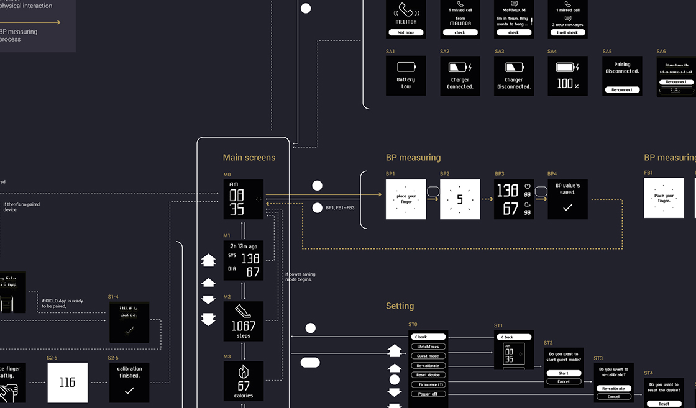
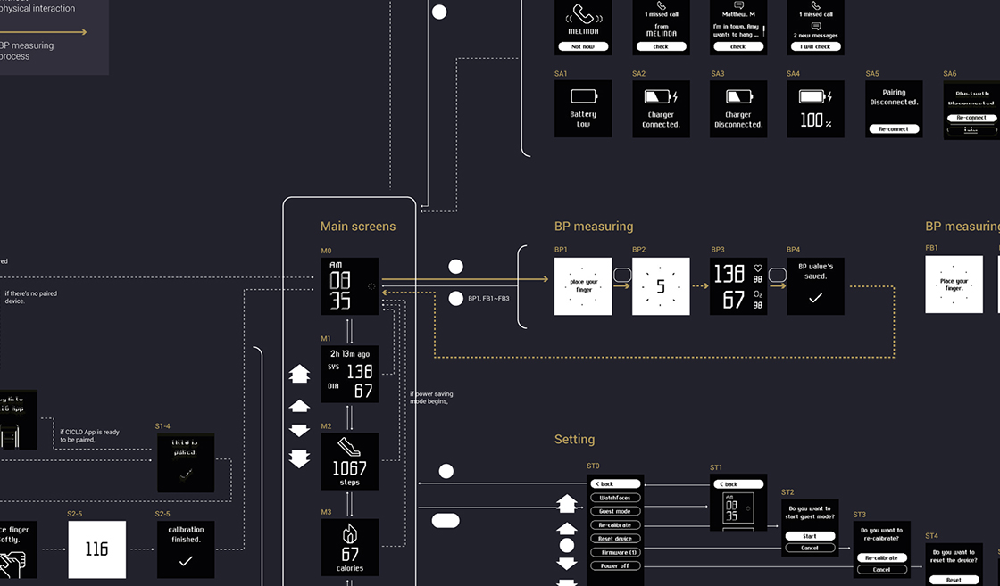

MEMO는 임상실험을 통해 검증된 웨어러블 혈압측정기입니다. 손목 위에서 지속적이고 정확한 건강 상태 측정을 할 수 있게 만들어진 제품입니다.
웨어러블 기기의 UX, 연동되는 모바일 앱의 UX를 디자인했고 BI와 GUI 디자인 또한 프로젝트 범위에 포함됐습니다. 전체 프로젝트는 제품디자인과 동시에 진행됐습니다.
MEMO는 손목 위에서 혈압 측정을 가능하게 만든 혁신적인 제품입니다. 특수한 목적을 가진 제품인만큼 쉬운 작동과 정확한 측정을 위해 센서와 버튼의 모양, 위치 등 인체공학적 측면에서 섬세하게 고려해야할 PUI적 부분들이 많았습니다.


MEMO의 UX는 다음 세 가지 주안점을 두고 디자인되었습니다. 1) 초기 설정이 쉽고 빠를 것, 2) 혈압 측정 기능까지 최소한의 단계만 거치게 할 것, 3) 측정하는 동안 사용자에게 직관적인 피드백을 줄 것. MEMO의 GUI는 낮은 해상도의 디스플레이 위에서도 시각적으로 정돈된 형태로 보이게끔 디자인하는 데에 중점을 두었습니다.
 

MEMO 로고타입의 전반적 구조와 형태는 HUINNO 로고타입의 '견고하고 선명한' 특징을 공유합니다. 메인 색상으로 깊은 푸른 빛이 도는 검정색과 금색을 조합해 MEMO의 고급스러운 브랜드 이미지를 향상시키고자 하였습니다.


아이폰용 MEMO 앱은 사용자들이 혈압 변화를 직관적으로 이해할 수 있게 돕는 플랫폼으로 디자인되었습니다. MEMO 제품으로 측정한 혈압은 자동적으로 앱에 동기화되어 기록되고, 다른 혈압기로 측정한 혈압값도 사용자가 수동입력 할 수 있습니다. 계정 생성과 기기 연동을 위한 과정 역시 누구나 쉽게 사용할 수 있도록 단순화했습니다.